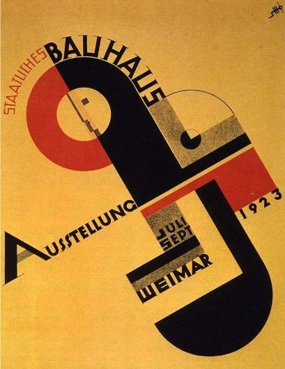

A poster built from just three colors — red, black, mustard-yellow — takes a face apart into a circle, a square, a triangle, and pins it diagonally across the frame. No furniture, no building, no photograph — yet this is arguably the single most famous piece of graphic design the Bauhaus ever produced, and it answers "what is Bauhaus" more precisely than any object could.
A brief constraint, not a free choice: this poster won a design competition whose rules required entrants to incorporate the Bauhaus-Signet — the pared-down profile/eye emblem designed by Oskar Schlemmer, a distillation of the school's "human-geometry" philosophy. Schmidt folded that emblem into a cross-shaped arrangement of circles, half-circles, and squares, tilted off the vertical.
A diagonal spine instead of a grid: the poster's main axis runs from bottom-left to top-right — "AUSSTELLUNG" climbs the diagonal, "BAUHAUS" bites horizontally across the center — producing a sense of motion, as if the whole composition is about to tip over. It reads as far more energetic than any grid-aligned layout could.
Occlusion instead of shading: the jagged black shape stacks over the red ring and ochre ground, and depth comes entirely from which flat color sits in front of which — not from any gradient or light source. It's a print-logic kind of space: it doesn't simulate where light comes from, only who's blocking whom.
The restrained triad — red, black (standing in functionally for "cool"), and mustard-ochre — isn't an arbitrary choice. It sits directly on top of the Bauhaus's own color pedagogy: in his color theory course at the school, Kandinsky proposed a mapping between the three primaries and the three basic geometric forms (square=red, circle=blue, triangle=yellow). This poster doesn't apply that formula literally, but the underlying logic is the same — geometry as color, color as geometry.
The poster was originally printed and pasted up across 120 German railway stations as touring advertising for the 1923 "Bauhaus Week" exhibition. The high contrast and the small number of colors aren't an aesthetic preference — they're a functional requirement: a passerby needed to recognize it from meters away, in seconds.
1923, the year this poster was made, is also the year Bauhaus director Walter Gropius coined the school's new slogan, "Art and Technology: A New Unity" — the moment the Bauhaus formally stepped away from Johannes Itten's mystically-inflected, craft-based early phase and toward industrialized, standardized production. This poster is itself living evidence of that turn: it wasn't painted, it was designed — using geometric form, printed type, and color theory as a reproducible system that replaced the randomness of an individual hand.
The small stacked-letter monogram in the poster's upper right is Schmidt's own designer's mark — placed alongside Schlemmer's Bauhaus emblem at the center. It's a strikingly modern piece of design ethics: a collective institutional brand and an individual author's signature, coexisting in the same frame.
What makes this poster affecting is exactly that it abstracts "a person" almost past recognition, yet you're still certain, at a glance, that you're looking at a face — one eye (the black dot inside the red ring), one profile (the jagged black silhouette), compressed into pure geometric logic without losing that faint sense that someone is looking back at you. That's the Bauhaus's central ideal made visible: the unity of head, hand, and heart — an artist's intuition, a craftsman's hand, an engineer's reason, meant to be one thing rather than three competing identities.
A century later, this poster reads almost like a prophecy of the century of graphic design that followed it — from the Swiss International Typographic Style to the brand identity systems of countless tech companies today, all of which can trace an ancestor back to this tilted red-and-black sheet.
Joost Schmidt (1893–1948) was born in Wunstorf, Germany. He entered the Bauhaus at Weimar in 1919, studying under Johannes Itten and Oskar Schlemmer, initially focused on woodcarving. From 1925 he stayed on as a teacher, running the lettering curriculum; he headed the sculpture workshop from 1928–1930 and the department for advertising, calligraphy, and print/graphic design from 1928–1932. After the Bauhaus was shut down under Nazi pressure in 1933, he continued working as a graphic designer in Berlin under difficult conditions, later teaching at the Berlin College of Visual Arts. He died in Nuremberg in 1948.